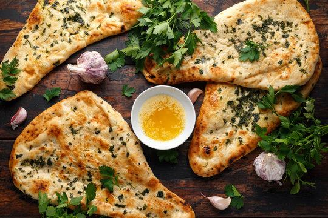

Description
This is an authentic Indian Naan recipe. I have made this many times. It
goes well with Indian curry which has a lot of gravy, such as the Butter
Chicken.
Ingredients
-
2/3 cup warm water (110 degrees F/45 degrees C)
- 1 teaspoon active dry yeast
- 1 teaspoon white sugar
- 2 cups all-purpose flour
- 1 teaspoon salt
- 1/4cup ghee
- 2 tablespoon plain yoghurt
- 2 tablespoon kalonji (onion seed)
Steps
-
Whisk the warm water with the yeast and sugar until the yeast is
dissolved. Cover and let stand in a warm place for 10 minutes.
-
Sift flour and salt three times into a large bowl add the yeast mixture,
half of the ghee and all the yogurt. Mix into a soft dough then knead on
a floured surface for about 5 minutes or until dough is smooth and
elastic. Place the dough in a large greased bowl, cover and let stand in
a warm place for 1 1/2 hours or until the dough is doubled in size .
-
Punch down dough then knead for 5 minutes. Divide dough into 6 pieces.
Roll each piece out into 8 inch round naans.
-
Cover an oven tray with foil and grease the foil. Brush the naan with a
little of the remaining ghee and sprinkle with some of the kalonji. Cook
naan one at a time under the broiler for about 2 minutes on each side or
until puffed and just browned.